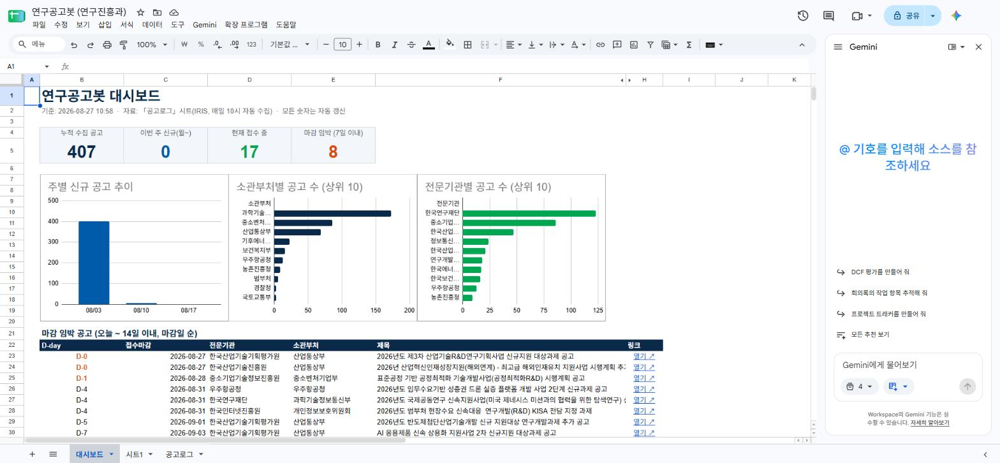

▸ 8/31(월) 부서 스터디 세션 자료: 「엑셀 대시보드, 아주 쉽게」 안내문 보기
연구진흥과에는 매일 오전 10시 정부 R&D 통합포털(IRIS)의 새 공고를 가져와 담당자에게 메일로 알리는 Google Apps Script 봇이 가동 중입니다(1회차 이전 구축, PC를 꺼도 구글 서버에서 실행). 봇은 알림과 함께 공고 1건을 1행으로 시트 「공고로그」에 기록합니다 — 공고ID·발견일시·공고일·전문기관·소관부처·제목·접수시작·접수마감·링크·분야·사업명·첨부공고문·AI요약의 13열.
즉 이번 과제는 "데이터를 새로 만드는" 것이 아니라, 이미 자동으로 쌓이는 운영 데이터를 읽히게 만드는 일이었습니다.

실측값 407 / 0 / 17 / 8. "이번 주"는 월요일 기준 자동 계산, "접수 중"은 접수시작≤오늘≤접수마감.
QUERY 집계표를 원본으로 삼아 행이 늘어나면 차트도 따라 늘어납니다. 과기정통부·한국연구재단이 각 1위.
D-3 이내는 붉게 강조, 각 행에 IRIS 원문 「열기↗」 링크. 오늘(8/27) 마감 2건이 맨 위에 보입니다.
공고로그를 ARRAYFORMULA로 날짜형 정규화한 사본. 텍스트/날짜가 섞여 들어와도 계산이 깨지지 않게 하는 완충층입니다.
| 항목 | 구현 |
|---|---|
| 날짜 정규화 | IF(ISNUMBER(x), INT(x), DATEVALUE(SUBSTITUTE(x,"/","-"))) — 날짜형·"2026/08/27"·"2026. 8. 27" 혼재 대응 |
| 주 시작(월) | 발견일 − WEEKDAY(발견일, 3) |
| 집계 | QUERY(… group by … order by count() desc limit 10) 3종 → 차트 원본 |
| 마감임박 목록 | QUERY({D-day, 마감, 기관, 부처, 제목, URL}, "where Col1 >= 0 and Col1 <= 14 order by Col1") + HYPERLINK |
| 강조 | 조건부서식: D-day ≤ 3 → 붉은 굵은 글씨 |
부수 발견: 대시보드를 만들자마자 "8/20 이후 8일간 신규 공고 0건"이라는 사실이 눈에 들어왔습니다. 휴가철 공백일 수도 있지만, 봇 상태 점검을 촉발했다는 점에서 대시보드가 이상 감지 역할을 한 첫 사례입니다. 매일 오는 알림 메일만으로는 보이지 않던 패턴입니다.
| 구분 | Before | After |
|---|---|---|
| 데이터 활용 | 407행 로그 — 열어봐도 흐름이 안 보임 | KPI·추이·분포·마감이 한 화면 |
| 갱신 | — | 봇 적재 → 자동 갱신, 사람 작업 0 |
| 이상 감지 | 알림 메일이 안 오면 눈치채기 어려움 | "이번 주 신규 0" 등 수치로 즉시 드러남 |
| 지속가능성 | — | 재생성 스크립트 + 매뉴얼, 계정 이관 시 1회 실행 |
다음 계획: 같은 집계를 주간 다이제스트 메일로 부서에 자동 발송(대시보드 → 메일), 마감 D-day 리마인드, 공고 소스 확장(NTIS 등). 3회차 "작은 업무 에이전트 시제품"으로 이어집니다.